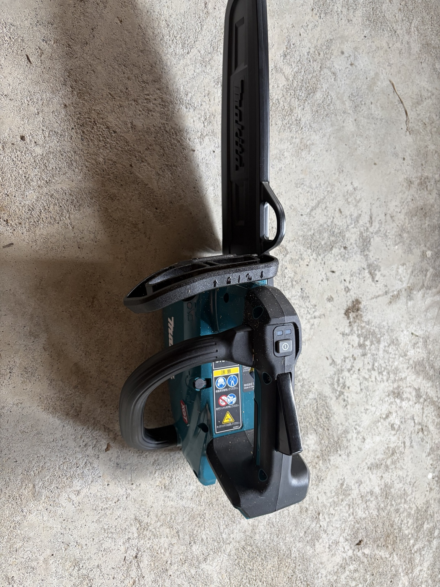
マキタの40Vmax充電式チェーンソー MUC031Gを実際に使った内容を紹介します。竹切りや細木の切断に使いやすく、取り回しの良さが魅力です。付属オイル、充電器、バッテリー、バッテリーカバーなど、実際に使って分かったポイントを写真付きでまとめています。
マキタ MUC031Gを使っています
40Vmaxの充電式チェンソー MUC031G。ここでは、購入後の初回使用で迷いやすいチェーンオイルについて、実物写真を中心にまとめます。
付属していたオイルの名前
マキタ 199421-2 オイルベセルタービンオイル 100mL
写真のボトルに記載されている品番は 199421-2、名称は「オイルベセルタービンオイル」です。販売店によっては「オイルベゼルタービンオイル」「チェーンオイル」などの表記でも掲載されています。
取扱説明書には「使用前にオイルタンクにチェーンオイルを入れる」ことは記載されていますが、付属ボトルの「199421-2 オイルベセルタービンオイル」という商品名までは明記されていません。そのため、付属の小さなオイルが何に使うものか迷う場合があります。
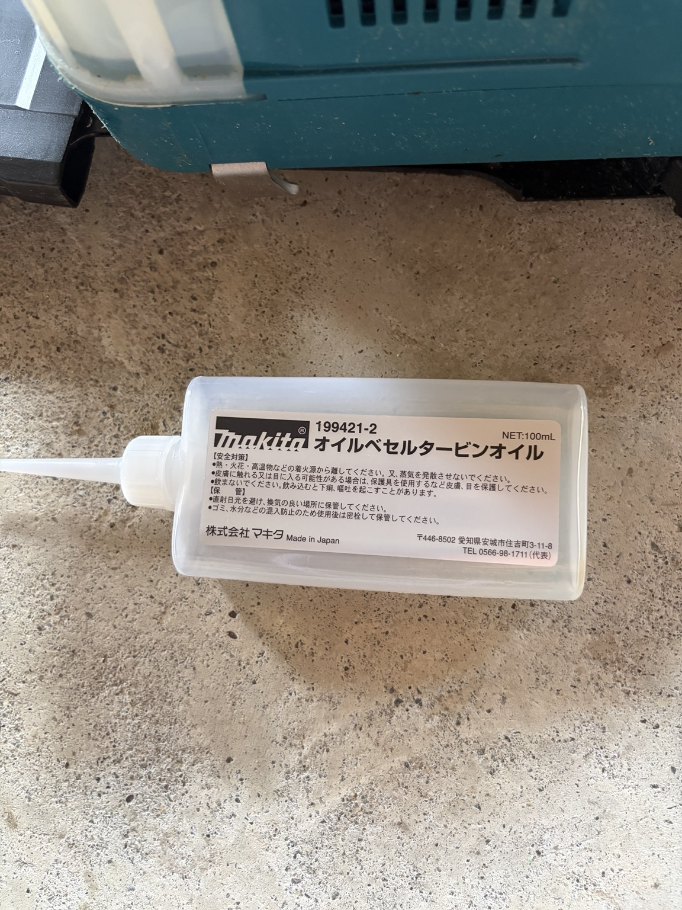
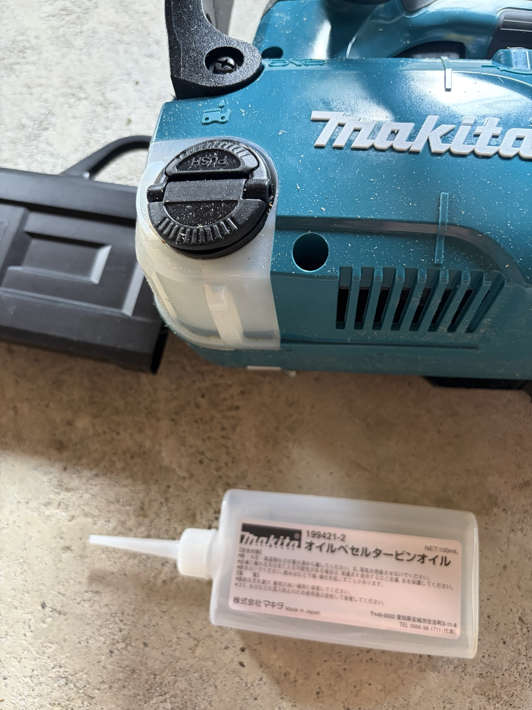
どこに入れる？
本体側面にある、オイルマークの付いたオイル給油口です。キャップを開け、チェーンオイルを注入します。
DC40RA充電器と40Vmaxバッテリー
MUC031Gで使用する40Vmaxバッテリーと、急速充電器DC40RAの実物写真です。
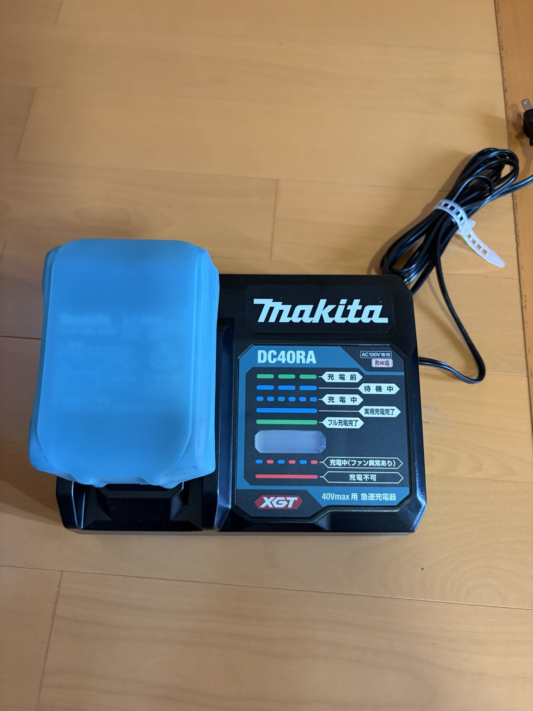
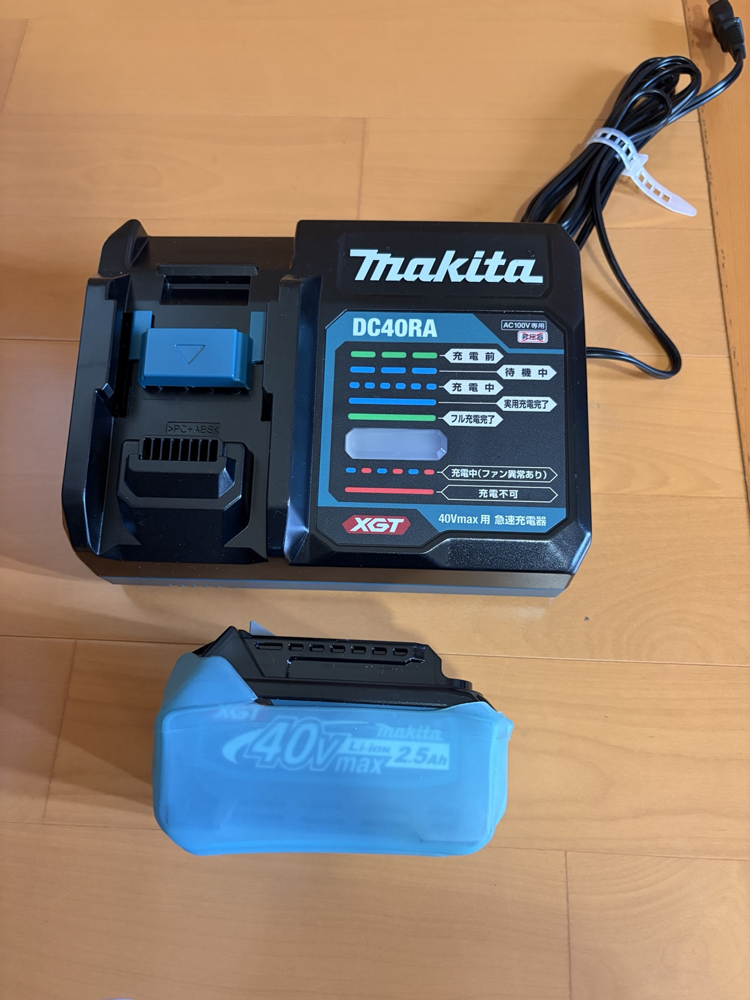
40Vmaxバッテリーカバー
写真の青い部分は、40Vmaxバッテリー用のバッテリーカバーです。保管時や持ち運び時にバッテリーを保護するために使用しています。
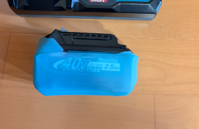
チェーンソー作業の安全装備
オレゴン チャップス 575780
安全のために購入したオレゴンのチャップス 575780です。製品表示では EN ISO 11393-2、CLASS 1（20 m/s）が確認できます。チェーンソー作業では脚部を守る装備が重要なので、チャップスなどの防護用品の着用をおすすめします。
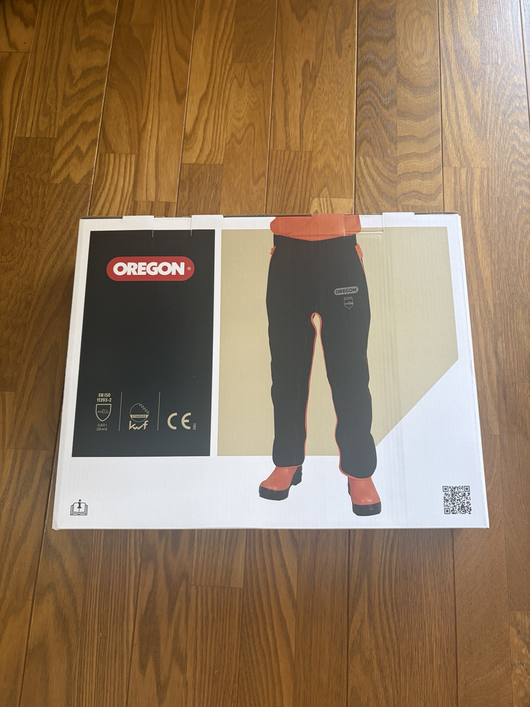
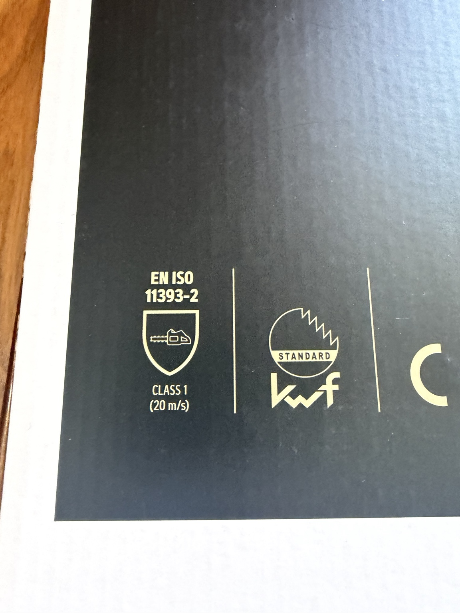
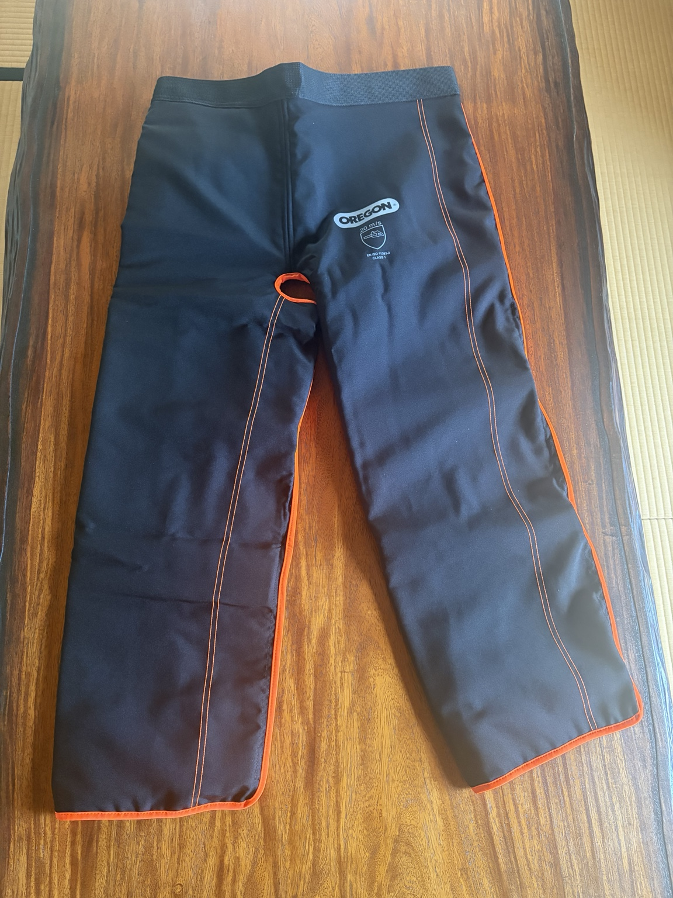
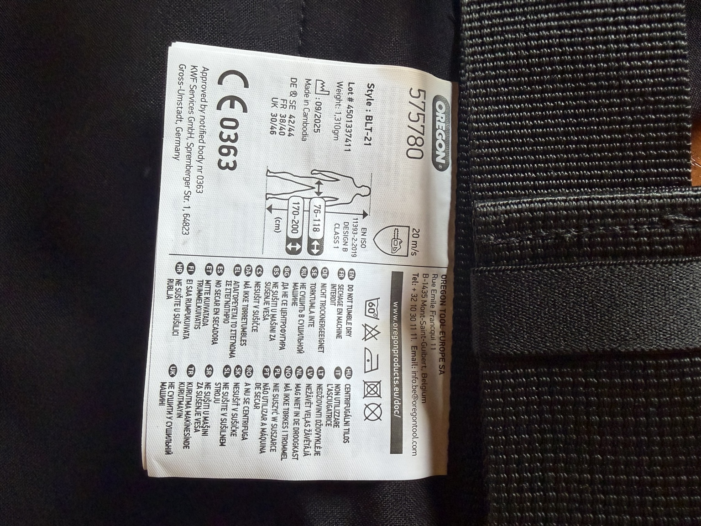
ミルウォーキー チェーンソーグローブ
チェーンソー用の手袋はいろいろ迷いましたが、今回は両手を守れるミルウォーキーのグローブを選びました。実際に装着した感じでは手を動かしやすく、操作性も問題なさそうです。製品には CLASS 1（20 m/s）の表示があります。
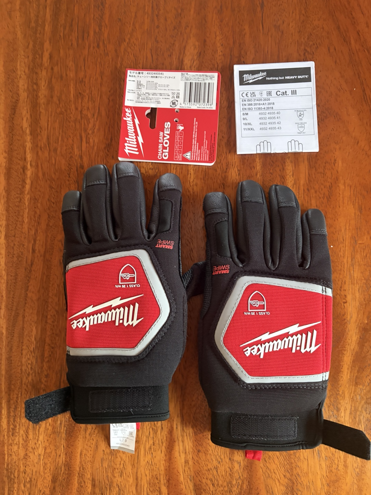
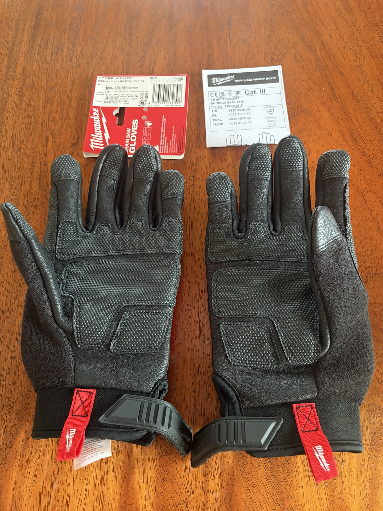
マキタ MUC031G チェーンソーを購入する
マキタ MUC031G／MUC031GRD 40Vmax充電式チェーンソーの購入先です。竹切りや細木の切断に使いやすい250mmモデルです。